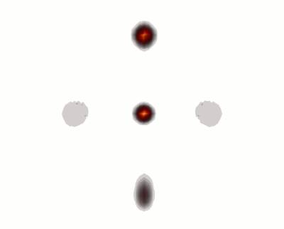

Local Atomic Motif Method
The LAM method’s use of rigid rotations creates a 3D visualization that is a true representation of the bulk model, and thus allows quantitative information to be extracted as demonstrated in this work. Consequently, the bond angle distributions, bond distance distributions, PCF and even coordination number are conserved within our visualization. It is for these reasons that our method is a conceptual advancement that allows visualizations to serve a useful purpose in solving structure problems.
Creating a LAM
The atomic structures are visualized by translating each atom and its local arrangement to the origin and applying multiple geometric rotations to each cluster such that they are all oriented consistently using the following procedure, implemented in Python. First, an atom is chosen from the bulk structure and is labelled as atom 0. Then a fixed number of its nearest neighbours are found, sorted by proximity from atom 0 and labelled with numbers (1,2....). This produces a cluster of a set number of atoms in total, which can comprise the complete first, second, etc. shells for an analagous crystalline system. This cluster is then translated to constrain atom 0 to the origin. The cluster is then rotated about the polar angle to bring atom 1 to the z-axis. An azimuthal rotation, about the z-axis, is then applied to the cluster, placing atom 2 on the x-z plane. These are standard rotations implemented using quaternions. This procedure is repeated for every atom in the model until all N clusters for an N atom model are superimposed on top of each other.
Though this method successfully creates a first look at the structure of a tetrahedral system, it is not generalizable to other systems. In the case of structures like the icosahedron, after atom 1 is rotated to the z-axis, there are three different types of atoms that could be atom 2; the upper plane, the lower plane or on the negative z-axis. The latter case is especially unfortunate as the azimuthal rotations will not serve a purpose. The following modification was created to allow this method to apply to all possible structures: a list of atoms that lie within the nearest neighbour distance are found. The first atom will then be chosen as atom 1, as usual. Of the remaining atoms, the atom with the smallest n-0-1 angle will be constrained to the x-z plane.
The images below show the comparison of the LAM for a tetrahedral crystal and one of amorphous germanium. Notice the how the amorphous sample still mostly captures the crystalline positions but the extra densities are unique to the amorphous sample and would be completely missed by other visualization and analysis techniques.
{kind=link}